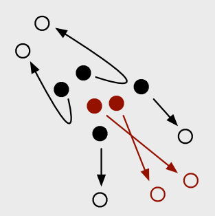
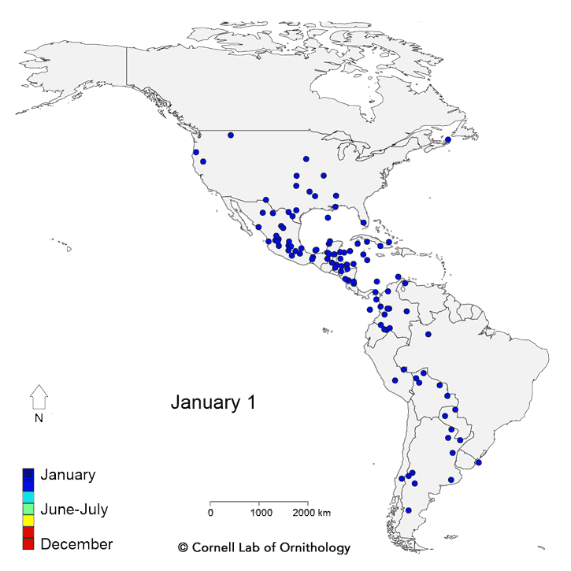
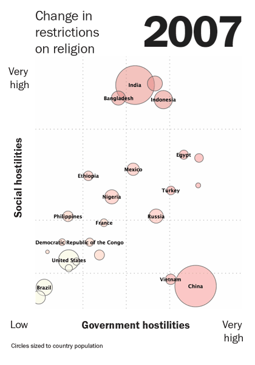
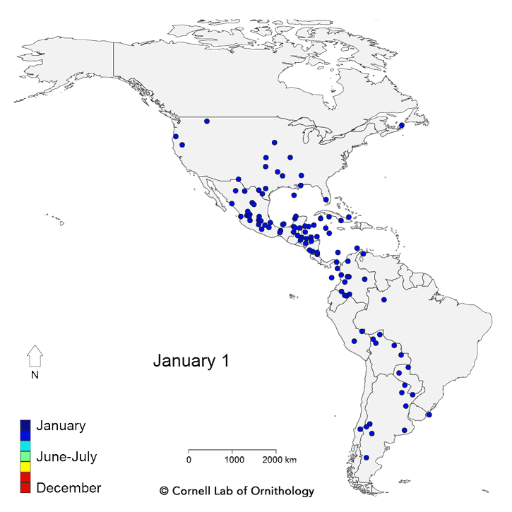
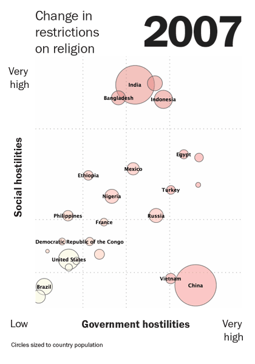
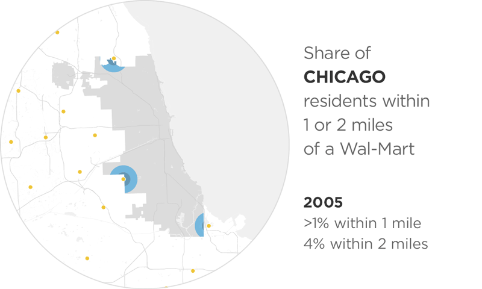
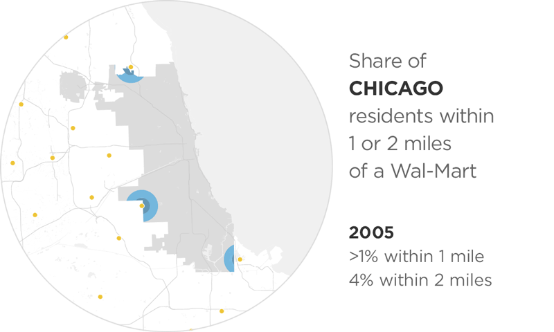

A Comparative Evaluation of
Matthew Brehmer * · Bongshin Lee · Petra Isenberg · Eun Kyoung Choe
mb@mattbrehmer.ca | @mattbrehmer · @bongshin · @dr_pi · @slowalpaca mattbrehmer.ca / talks /
mobiletrendvis (slides) | tinyurl.com / mobiletrendvis (pre-print)
IEEE VIS 2019 · Oct 23 2019
Good morning. Thank you for the introduction.
Animation vs. Small Multiples on Mobile Phones
Crowdsourced Experiment : Animation Small Multiples Task : identify 1-3 targets from a set of 16 items.
In a nutshell, with this experiment we people to identify 1-3 targets among a set of 16 items in either an animated scatterplot or a static small multiples scatterplot where each item includes its trajectory trail.
The Rise of the Data GIF
Sources (L → R): The Washington Post | Cornell Lab of Ornithology | Pew Research Center.
lenagroeger.com / datagifs | Lena Groeger (ProPublica, NICAR Tutorial 2017) pinterest.com / jsvine / datagifs | Jeremy Singer-Vine (Buzzfeed)
Why did we do this experiment?
Animation on Mobile, Small Multiples on Desktop?
Data viz solutions: small multiples on desktop, GIFs on yer phone! Question : Is there evidence to justify this allocation of designs to different device profiles?
The NPR News Graphics Team had promoted this design strategy of displaying small multiples on desktop and looped animated GIFs on phones,
Prior Work: Animation vs. Trails vs. Small Multiples
Effectiveness of Animation in Trend Visualization Test-of-Time Award recipient at InfoVis 2018.
Some of you may be reminded of research published over a decade ago
Prior Work: Animation vs. Trails vs. Small Multiples
Effectiveness of Animation in Trend Visualization Lab Experiment :2 Contexts (Analysis vs. Presentation) | 3 Design conditions | 2 Dataset sizes (large, small) | 24 Tasks
Notable results : Analysis performance higher with multiples; participants preferred animation.
Question : Will we arrive at similar results with mobile phones?
Their experiment considered two settings, a data analysis setting and a presentation setting with a narrator like to emulate Rosling's TED talks,
A Crowdsourced Experiment on Mobile Phones
A crowdsourced visualization evaluation study performed exclusively on phones .
Crowdsourced Experiment :1 Context | 2 conditions: 1 Dataset size (16 items) | 13 Tasks (3 Training, 1 QA, 9 Test)
In contrast, we conducted a crowdsourced experiment on mobile phones that borrows some of the elements of Robertson's experiment,
Tasks *: Targets & Distractors
Tasks adapted from Robertson et al (IEEE TVCG 2008).
One of the things we had observed about the tasks used in the 2008 study was that they were fairly different from one another,
5-Stage Task Format
Show instruction & axes → 5s delay → Start → Select 1 - 3 countries → Done
This is what the task stimuli actually looked like on a phone.
96 Participants
+17 excluded participants who responded incorrectly to quality control task.
We recruited participants from Mechanical Turk and after excluding participants who responded incorrectly to an obvious quality control task,
Animation or Small Multiples: Overall Results
Detailed results in paper: tinyurl.com / mobiletrendvis
= Faster
= More accurate
= Multiples = Animation
I'm going to focus on some of the important take-away results, and there's more details in the paper
Trajectory Reversals: Animation & SMs at Parity
These tasks involve targets having trajectories that reverse course,
Beyond the overall results, what's interesting is when we consider individual tasks,
Vertical or Long Trajectories: A Case for SMs
These tasks involve comparing ∆Ys: a ∆Y with no ∆X (top) or the 2 largest ∆Y values (bottom).
Similarly if we consider the two tasks were the small multiples exhibited higher accuracy,
Direction of Motion Outliers: A Case for Animation
These tasks involve assessing both ∆Y and ∆X: target trajectories quite different from distractors.
Finally, there was two tasks where animation had higher accuracy and comparable completion times relative to small multiples,
Conclusions: Animation or Small Multiples ?

Surprisingly, still viable on small displays.
Follow-up work should examine distance and angle comparisons.
comparably accurate in > 50% of tasks.
Follow-up work should examine outlier trajectories and reversals .
aka.ms / multiples | (mobile only) experimental app.
github.com / Microsoft / MobileTrendVis | open source app and analysis.
tinyurl.com / mobiletrendvis (pre-print) | mattbrehmer.ca / talks /
mobiletrendvis (slides)
mb@mattbrehmer.ca | @mattbrehmer · @bongshin · @dr_pi · @slowalpaca
Ultimately, we were surprised that small multiples remains to be a viable design option for small mobile phone displays.
 

Sources (L → R): The Washington Post | Cornell Lab of Ornithology | Pew Research Center.


Sources (L → R): The Washington Post | Cornell Lab of Ornithology | Pew Research Center.
 
Data viz solutions: small multiples on desktop, GIFs on yer phone!

Data viz solutions: small multiples on desktop, GIFs on yer phone!